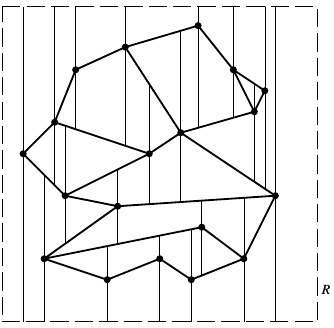
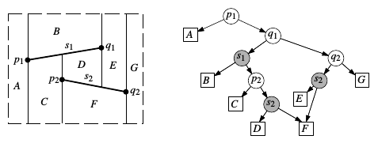
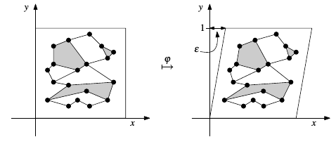

第一次接触到计算几何，非常有意思。
Bookmark
CGAA: Computational Geometry Algorithms and Applications 3rd
Line Segment Intersection
2018.6.22, CGAA
问题. 给定一个大小为的平面线段集合，其中每条线段由两个端点确定，求其中所有线段间的交点。
两条线段是否相交可以确定，于是遍历所有无序线段对给出了的暴力算法，这显然太naive了。容易观察到，线段和相交的一个必要条件是它们在轴（或者任意一个轴）上的投影存在重叠部分，于是我们可以给出以下改良：初始时所有线段的标记均为out，用一根sweep line从上往下扫描，每当遇到一条线段的entry point，就把该线段标记为in并测试它和所有其他处于in状态的相交性；每当遇到一条线段的exit point，就将其标记改回out。这一算法规避了在轴上投影不重叠的线段间的相交测试。但是在轴上投影重叠的两条线段可能在其他轴上相距很远，该算法在最坏情况下还是的。
进一步的改进基于以下观察：假设所有和sweep line相交的线段按交点的坐标排序，则每条线段只需要和左右相邻的两条线段进行相交测试。
在算法运行之初，所有线段都和sweep line不相交，因此这些线段两两“不相邻”。在sweep line向下运动的过程中，什么时候两条线段会变得相邻，从而需要进行相交测试呢？有以下几种情况——
-
Entry事件：遇到某条线段的entry point时，设此时和sweep line相交的线段按排序为，则变得和以及相邻。
-
Exit事件：遇到某条线段的exit point时，若原来和sweep line相交的线段排序为，则和变为相邻。
-
交点事件：遇到两条线段和的交点时，若原来和sweep line相交的线段排序为，则和变为相邻，和变为相邻。
基于此，只需从上往下地移动sweep line，每次遇到这种“变得相邻”的事件，就对当事的两条线段进行相交测试即可。Entry point和exit point事件都非常容易探测，而对于交点事件，我们有这样的结论：在sweep line移动到和的交点之前，和一定已经经历过相交测试，即一定已经被发现过了。这样一来，我们就可以保证不漏过任何一个“变得相邻”事件，从而找出所有的线段交点。
该算法时间复杂度为，其中为线段数量，为交点数量——建立和维护有序结构（比如使用红黑树）使得每次基本操作（插入删除查询等）是的，而事件总数（entry+exit+intersect）则是的。
注意这里没有叙述对一些微妙corner case的处理，比如如何handle水平线段、如何应对多条线段交于一点的情况等，它们并不会影响算法的时空复杂度，但实现的时候需要仔细处理。
Doubly-Connected Edge List
2018.6.22, CGAA
考虑平面的一个联通子集上的区域划分，设区域边界都是直线，于是每个区域都是一个多边形。Doubly-Connected Edge List（DCEL）是用以表示该划分的一种数据结构，它支持以下操作：
- 遍历某个面的所有边
- 遍历通过某个顶点的所有边
- 通过一个面的某条边访问占据该边的另一个面
DCEL大概长这样：
struct vertex_t;
struct fce_t;
struct half_edge_t
{
half_edge_t *succ, *prev, *twin;
vertex_t *origin;
face_t *face;
};
struct vertex_t
{
point2f coord;
half_edge_t *edge; // arbitrary edge that has the vertex as its origin
};
struct face_t
{
half_edge_t *edge; // arbitrary edge of its outer boundary
list<edge*> int_edges; // one for each hole in the interior
};每条边被拆分为两条“half edge”，合称为一个“twin”。每个面由一系列half edge围起来，并且约定每条half edge的face位于它的左边（这保证了edge方向的一致性）。每条half edge都记录着它在自身所处的逆时针环中的前驱和后继，这构成一个循环链表。此外，half edge中还记录着其twin中的另一条half edge，以及自身的起点。
其实这个结构挺trivial的，很容易根据定义想到上面列举的三种操作该如何实现。
Art Gallery Theorem
2018.6.22, CGAA
Simple Polygon: regions enclosed by a single closed polygonal chain that does not intersect itself.
Diagonal: an open segment that connects two vertices and lies in the interior of the polygon.
Triangulation (of polygon): a decomposition into triangles by a maximal set of non-intersecting diagonals.
通过对多边形顶点数做归纳，容易证明：
Theorem. Every simple polygon admits a triangulation, and any triangulation of a simple polygon with vertices consists of exactly triangles.
也就是说，线性输出规模的三角化对简单多边形总是可行的。在此基础上，容易证明三角化后的简单多边形的对偶图是一棵树，于是可以用线性时间对三角化的结果进行3着色，并得到以下推论：
Art Gallery Theorem. For a simple polygon with vertices, cameras are occasionally necessary and always sufficient to have every point in the polygon visible from at least one of the cameras.
Overlay of Two Subdivisions
2018.6.23, CGAA
给定两个平面上的subdivision ，定义它们的overlay 为：面当且仅当存在使得是的某个极大联通子集。
的计算方法和所使用的subdivision表示方法息息相关，在这里假设是输入输出都用DCEL表示。容易证明两个输入DCEL中没有发生相交的那些half edge、face和vertex都可以原封不动地拷贝到输出DCEL中，需要重新计算的仅仅是和之间发生了相交的部分。
考虑之前提到的全局线段求交算法，我们把两个DCEL中的edge临时视为closed segment，然后用求交算法求全局交点。在sweep line往下扫的时候，根据遇到的event point类型来修正DCEL的vertex和edge信息是不困难的，不过需要非常多的分类讨论。这个过程只需要保证一个invariant：在任意时刻sweep line上方的DCEL的vertex和edge是正确的。
比较麻烦的是新face的计算，我们需要确定有哪些新face记录要添加，为遭遇变动的face更正edge指针，修改变动的face的edge中的face指针，以及为新face根据原face的label name赋予正确的label值。
在之前的步骤中，已经计算了顶点和边的信息。每条half edge都处于唯一的一个循环链表中，这个edge half list称为一个“boundary”。给定一个boundary，如何判定它是一个face的外边界还是内部的hole的轮廓呢？这可以通过boundary中的lowest leftmost vertex的两条相邻edge间的转角结合“boundary中边的左边是它所处的face”的约定来实现。
另外，由于face需要持有它所有boundary入口的链表，我们还需要判定哪些boundaries隶属于同一face。为此，考虑图：
- 每个boundary对应中的一个顶点，此外对subdivision最外面的那个unbounded “face”，也设置一个对应的顶点。
- 对两个boundaries，若其中一个是boundary of a hole，而另一个boundary中恰有half edge是hole boundary的lowest leftmost vertex左方最近的一条边，则这两个boundary对应的顶点间有一条边。若某个boundary地lowest leftmost vertex左侧没有half edge，它就和unbounded face对应地节点链在一起。
Lemma. 中的每个连通分量恰对应一个face的boundary集合。
乍一看，图的边集构造简直坑爹，但我们其实可以在sweep line扫描的过程中得到需要的信息——在每个event point处，很容易获得它左侧最近的边是哪条。
这个算法时间复杂度还是，其中是的复杂度之和。尽管算法的每一步都透露出trivial的气息，但是综合到一起颇有一种蒸汽朋克式的美感——也就是说，实现起来会很蛋疼。
最后，基于这个算法，二维矢量多边形的布尔运算可以很容易地实现，算是回答了我一直有些好奇的问题吧。
Polygon Triangulation
2018.6.23, CGAA
Polygon into Monotone Pieces
Monotone: a simple polygon is called monotone with respect to a line if for any line perpecdicular to the intersection of the polygon with is connected. A polygon that is monotone with respect to the -axis is called -monotone.
将多边形先转换为-monotone pieces，能极大地简化将多边形三角化的过程。
Turn Vertex: 相邻的两条边都朝下或者都朝上的顶点称为turn vertex。把多边形转为monotone的过程也正是去除turn vertex的过程。
Below & Above: a point is below another point iff or . A point is above another point iff or 。也就是说先按坐标从下到上排序，对相同的点再按坐标从右往左排序，“左上”的点是最“高”的。
Start Vertex: a vertex is a start vertex iff its neighbors lie below it and the interior angle at is less that .
Split Vertex: a vertex is a split vertex iff its neighbors lie below it and the interior angle at is greater than .
End Vertex: a vertex is an end vertex iff its neighbors lie above it and the interior angle at is less than .
Merge Vertex: a vertex is a merge vertex iff its neighbors lie above it and the interior angle at is greater than .
其他的顶点就是常规顶点（regular vertex）了。
Lemma. a polygon is -monotone if it has no split vertices or merge vertices.
这个算法依然是基于sweep line的，也就是拿一条平行于轴的直线从上往下扫过待分割的多边形，的顶点集合就是所有的event point。现假设为所有顶点的一个逆时针排列，是多边形的边集，我们的目的是用适当的diagonals干掉所有的split vertex和merge vertex。
Helper: 对某条边，定义为
即介于sweep line和的上端点之间的、到的水平线段完全位于中的顶点中最低的那个。显然，把split vertex连到它左侧最近边的helper顶点就能干掉这个split。
Merge vertex的处理要更困难一些，因为它连接的对象是在sweep line的下方，即相关顶点的选择必须被推迟。设是merge vertex 左侧最近边，则当sweep line扫描到时，必然成为的helper顶点。在之后的扫描中，如果再次更新了的helper，那么把和的新helper连接起来即可；否则，可以把和的下端点连接起来。所以，只需要每次更新某条边的helper或遇到某条边的下端点时，检查该边原本的helper是否时一个merge vertex即可。
如何找一个顶点的左侧最近边就不记了，sweep line的拿手好戏。于是乎，把简单多边形剖分成-monotone多边形的算法就出炉了：
proedure make_polygon_into_monotone(P)
for each vertex v[i] in P, ordered by desc y coord
handle(v[i])
procedure handle_start_vertex(v[i])
helper(e[i]) = v[i]
procedure handle_end_vertex(v[i])
if(helper(e[i-1]) is a merge vertex)
connect(helper(e[i-1]), v[i])
procedure handle_split_vertex(v[i])
let e[j] = DirectLeft(v[i])
connect(helper(e[j]), v[i])
helper(e[j]) = v[i]
helper(e[i]) = v[i]
procedure handle_merge_vertex(v[i])
if(helper(e[i-1]) is a merge vertex)
connect(helper(e[i-1]), v[i])
let e[j] = DirectLeft(v[i])
if(helper(e[j]) is a merge vertex)
connect(helper(e[j]), v[i])
helper(e[j]) = v[i]
procedure handle_regular_vertex(v[i])
if the interior of P lies to the right of v[i]
if(helper(e[i-1]) is a merge vertex)
connect(helper(e[i-1]), v[i])
helper(e[i]) = v[i]
else
let e[j] = DirectLeft(v[i])
if(helper(e[j]) is a merge vertex)
connect(helper(e[j]), v[i])
helper(e[j]) = v[i]
好优美的算法……
Theorem. a simple polygon with vertices can be partitioned into -monotone polygons in time with an algorithm that uses storage.
Triangulating a Monotone Polygon
没什么好说的，一个把杂乱的思路理得非常清楚，但又似乎很trivial的算法：
把P的顶点分为左链和右链，并把所有顶点从上到下排序，记排序结果为u[1..n]
procedure triangulate_monotone_polygon(u)
stack.clear()
for j = 3 to n-1
if u[j].chain != stack.top().chain
while stack.size() > 1
connect(u[j], stack.pop())
stack.push(u[j-1])
stack.push(u[j])
else
last_popped = stack.pop()
while !stack.empty()
last_popped = stack.pop()
if connect(last_popped, u[j]) != successful
break;
stack.push(last_popped)
stack.push(u[j])
add diagonals from u[n] to all stack vertices except the first and the last
Theorem. a simple polygon with vertices can be triangulated in time.
Point Location Query
2018.6.24, CGAA
Trapezoidal Map
问题: 给定一个包含条边的planar subdivision 和一个点，求包含点的。
一种简单的做法是：过的每个顶点作一条平行于轴的直线，于是这些直线把整个平面划分为了个竖直条带，每个条带内部都不包含任何顶点。通过排序和二分查找，可以在时间内确定一个点位于哪个条带中；同时，每个条带至多被条互不相交的边划分为个区域，给定条带内一点，可以在时间内确定该点位于条带中的哪个区域中。这样一来，任给平面上一点，总能在时间内找出包含该点的面来。
这个算法的时间复杂度令人满意，却可能会占据的额外空间，这对数据规模稍大的应用是不可接受的。
Non-crossing: 称两条平面线段是不相交的，当且仅当它们的交集为空或只包含自己的端点。
这里先引入一个预处理：用一个非常大的轴平行矩形包含整个subdivision ，任何待查询的点若落在该矩形区域外，都一律视为落在unbounded区域中。于是在接下来的处理中，可以假设待查询点一定落在某个有限大小的面中。同时，我们使用“将坐标轴微微旋转一个小角度”的trick，使得顶点的坐标两两不相同。经预处理后的这组线段被称为是“in general position”的。
现考虑在的基础上，对每个顶点，过向上方和下方各投出一条射线（分别称为的upper extension和lower extension），直到撞上中的其他线段为止。将经该步骤处理后的subdivision记为。容易证明中的所有面都是梯形或三角形，如果把三角形视为一条边长度为0的退化版梯形，就可以把名正言顺地称作的“trapezoidal map”——

Lemma. Each face in a trapezoidal map of a set of line segments in general position has one or two vertical sides and exactly two non-vertical sides.
Top & Bottom: 每个梯形一定有两个non-vertical sides，上面那个所对应的原中的边记作，下面那个对应的原中的边记作。
Left & Right: 除了整个中最左侧和最右侧的两个矩形外，每个梯形左侧如果有条垂直边，那么记引出该垂直边的那个原中的顶点为，否则记和的唯一交点（位于的左侧）为。类似地，可以定义。
总而言之，一个梯形由它的上下边界线、和左右定界点、唯一地确定。
Lemma. the trapezoidal map of a set of line segments in general position contains vertices and trapezoids.
Search Structure
这里给出一种数据结构，用来快速进行point location query的答复。是一个带根结点的有向无环图，对中的每个梯形，中都有一个对应的叶结点。内部结点可分为结点和结点，出度均为2。每个结点指向中某条线段的一个端点，每个结点指向中的一条线段。
给定和待查询点，从根结点开始，在每个内部结点处选择向左或向右移动，直到移动到一个叶结点为止。对结点，按照位于该结点中存储的顶点的左侧还是右侧进行选择；对结点，按找位于该结点中存储的线段上方还是下方进行选择。这里暂且假设不会发生和结点横坐标相等，或是恰好落在结点线段上的情况。下图是一个简单的和它可能对应的：

一般而言，以不同的顺序把元素插入一棵树中会影响到这棵树的结构，这里也不例外。在某些极端情况下，树搜索效率会退化得非常糟糕。这里给出一个随机算法，其运行时间和空间在期望意义上是令人满意的。
procedure trapezoidal_map(S: set of n non-crrssing line segments)
make R
init T as trapezoids of empty set
init D with a single leaf node corresponding to R
compute a random permutation s[1..n] of the segments in S
for i = 1 to n
find T[0..k] of trapezoids in T properly intersected by s[i]
remove T[0..k] in T
insert new trapezoids that appear because of the insertion of s[i] and T[0..k]
remove leaves of T[0..k] in D
create leaves for the new trapezoids
link the new leaves to the existing inner nodes in D
设，则该算法的每轮循环结束时，始终是，是的一个合法search structure。可以看出这是一个增量算法。
在从过渡到时，某个梯形不能被原样保留当且仅当和有交叉，因此循环体的第一步就是找出这些梯形T[1..k]（这里设T[1..k]按和的相交位置从左往右排升序，显然T[j]和T[j+1]相邻）。跟据很容易找出，因此只需要找出即可。而就是左端点所在的梯形（如果没有落在已有线段或顶点上的话），因此在现有的（恰为的search structure）上进行一次point location query就能找出。
在查找时，的左端点可能已经在中的某条线段上，这时会出现沿着进行搜索时和结点横坐标相等，或是恰落在结点线段上的情况。这时，可以把在概念上沿着微微挪动向右到一个相邻的。这样一来，对搜索时对结点重合的情况，总是将视为位于结点的右侧；对恰好落在结点的线段上的情况，若斜率大于斜率，则认为在下方，反之上方。
综合前两段的讨论，寻找即T[0..k]的算法为：
procedure find_Ts(T, D, s[i])
let p = left end point of s[i]
let q = right end point of s[i]
search with p in the search structure D to find T[0]
j = 0
while q lies to the right of R(T[j])
if R(T[j]) lies above s[i]
let T[j+1] = lower right neighbor of T[j]
else
let T[j+1] = upper right neighbor of T[j]
j = j + 1
return T[0..j]
更新和的过程是复杂但平凡的，这里不再赘述。
Degenerate Cases
在之前的讨论中，算法略微旋转了坐标系，使得所有顶点的坐标均无重合。由于实际计算机的计算精度相当有限，这一trick在实现上并不平凡。接下来，我们从理论上除去这一trick，方法是使用一个逻辑上的微量扭曲。对某个微小的，构建如下顶点变换：

在接下来的运算中，实际使用的线段集合为。由于真正进行这一变换会遭遇数值计算上的困难，我们将记作。在上面给出的算法中，我们从来没有计算过任何新的几何对象位置，而仅仅是使用本来就有的坐标，并对它们做一些比较或判断。因此，这一逻辑上的微量扭曲可以反映到涉及坐标的判断操作上，使得任何两点的坐标都不发生重合。
于是乎——
Theorem. algorithm trapezoidal_map computes the trapezoidal map of a set of non-crossing line segments and a search structure for om time. The expected size of is and for any query point the expected query time is .
期望时间的推导比较复杂，有闲心再看吧。
Voronoi Diagram
2018.6.24, CGAA
Definitions & Properties
Euclidean Distance: 平面上两点间的欧氏距离定义为
Voronoi Diagram: 给定平面点集，所定义的Voronoi Diagram（维诺图）是一个planar subdivision，每个face对应一个。平面上一点位于某个的face内，当且仅当
将点集确定的维诺图记为。
Cell: ，其中是以点中线为边界的那一边的半平面，即：
Theorem. for , the number of vertices in the Voronoi diagram of a set of point sites in te plane is at most and the number of edges is at most .
Cp: 定义为以为中心的、内部不包含其他任何顶点的圆。显然是个闭集。
Theorem. 点是的一个顶点，当且仅当边界上有不少于3个中的点。
Theorem. 连线的垂直平分直线的一个子线段是的一条边，当且仅当存在点使得。
Computation
给定平面点集，一种简单的计算其维诺图的方法是对每个，利用之前提到的布尔求交的方法计算个半平面的交集，这将带来的时间复杂度，没什么用。接下来要介绍的是著名的Fortune算法，时间复杂度为。
Fortune算法也是基于sweep line的，它的框架和之前的线段求交算法有些相似——也有event point的概念。在sweep line 移动的过程中，要保证在上方的部分都已被计算出来是不现实的，这是由于这部分可能依赖于下方的、还未被扫描到的点。Fortune退而求其次，维护任一时刻在上方、且和下方顶点无关的部分。
首先我们需要一个标准——维诺图的哪部分一定不会受到下方的点的影响？换言之，在运动到某一位置时，设是上方的半平面，哪些的是已知的？
容易注意到，到下方任何一个的距离都大于到的距离，因此，若
则在维诺图中的归属不可能和下方的任何有关。可以证明，对每个，到的距离小于到的距离的点的边界是一条抛物线，于是我们有一系列这样的抛物线——
称的下边界为beach line。Beach line由多条抛物线的一部分（arc）构成，beach line上各arcs的分界点称为break point（断点）。可以证明，随着的移动，断点总是在的边上移动。

Observation. the beach line is -monotone, that is, every vertical line intersects it in exactly one point.
Site事件: 在扫描过程中遇到一个，称为一个site事件。Site事件会产生两个新断点以及一个arc。事实上，这也是唯一能够产生新arc的情景——
Lemma. 一个新arc只可能在site事件中出现。
Circle事件: 对形成beach line上相邻的三段arc的的三个中的点，称和它们所确定的圆相切为一个circle事件。
Lemma. 一个已有的arc只可能在circle事件中消失。
其实有了site和circle事件的概念，我认为维诺图的算法就已经自然而然地出来了，只是这里有非常多的细节需要handle。需要注意的是：不是所有的arc都会在circle事件中消失；一些潜在的circle事件可能由于当事arc在别的circle事件中先消失而作废。
Theorem. the Voronoi diagram of a set of point sites in the plane can be computed with a sweep line algorithm in time using storage.
Delaunay Triangulations
2018.6.25
Legal Triangulation
Triangulation: a triangulation of is a maximal planar subdivision whose vertex set is .
Theorem. 设中包含个（不全共线的）顶点，其中有个顶点位于构成的凸包的多边形上，则的任何三角化结果都包含个三角形，条边
Angle Vector: 任给点集的一个三角化结果，若其中共包含个三角形，则个三角形共有个内角。这些内角非降序排列的结果称为的角度向量。定义同一点集的不同三角化结果的角度向量间的全序关系为角度的词法序。称的三角化结果是角度最优的，当且仅当不小于任何其他的三角化结果的角度向量。
Thale’s Theorem. 设直线与圆交于两点，落在的同一侧。若在上，在内，在外，则。

Edge Flipping: 在一个三角化结果中，任取一条非边界边，两边的两个三角形共同构成一个以为对角线的四边形。将替换为该四边形的另一条对角线后，将会得到另一个三角化结果，这一替换操作称为一次edge flipping（边翻转）。边翻转会将两个三角形变为另外两个三角形。设翻转前两个三角形的六个内角为，翻转后为，称是一条非法边，当且仅当。
Theorem. 设包含非法边，是翻转的结果，则。
这里有一个平凡的消去非法边的算法：
while there exists an illegal edge e
flip e
由于在算法运行过程中，严格单调上升，因此该算法一定会停机，不过最坏效率就不敢恭维了。
Delaunay Triangulation
Delaunay Graph: 给定平面点集，的对偶图称为的Delaunay Graph，记作。
Theorem. Delaunary图总是可平面图。
General Position: 称一个点集是“in general position”的，当且仅当其中任意四个点都不在同一个圆上。这个概念用作点集的临时假设，可以简化算法叙述。
把按照Delaunay Graph连接顶点得到的三角化结果称为Delaunay三角化。